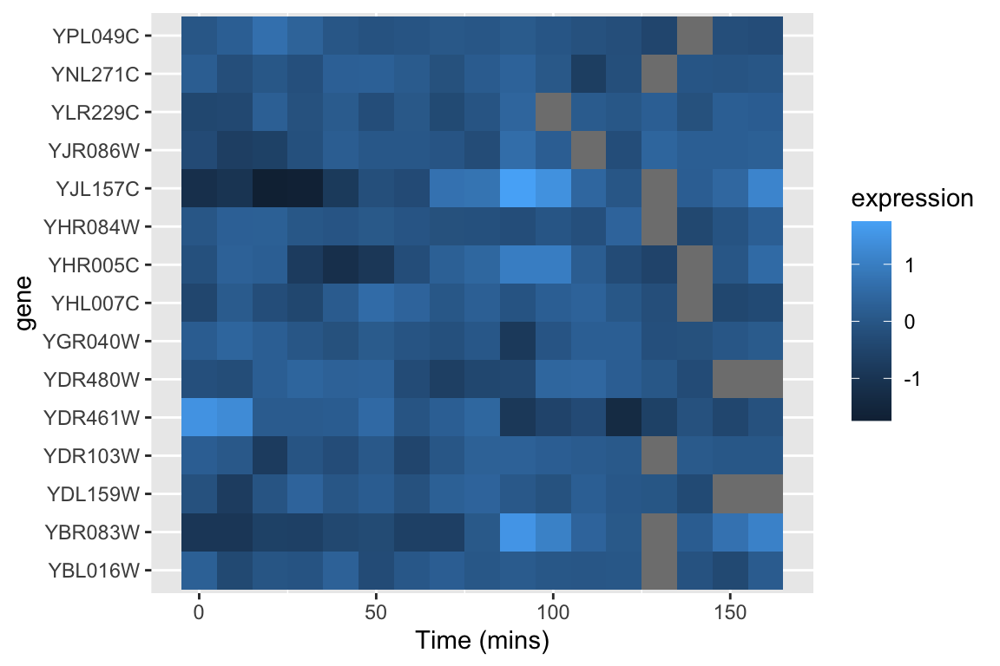

Chapter 9 Bivariate Linear Regression
Statistical models can be thought of as quantitative statements about how we think the variables under consideration are related to each other. Linear models are among the simplest statistical models. In a linear model relating two variables \(X\) and \(Y\), the general form of the model can be stated as “I assume that \(Y\) can be expressed as a linear function of \(X\)”. The process of model fitting is then the task of finding the coefficients (parameters) of the linear model which best fit the observed data.
Linear functions are those whose graphs are straight lines. A linear function of a variable \(X\) is usually written as:
\[ \hat{Y} = f(X) = a + bX \]
where \(a\) and \(b\) are constants. In geometric terms \(b\) is the slope of the line and \(a\) is the value of the function when \(X\) is zero (usually the referred to as the “Y-intercept”). The slope tells you have much \(Y\) changes per unit change of \(X\).
In vector terms, the above linear model can be written as:
\[ \vec{\hat{\mathbf{y}}} = a\vec{\mathbf{1}} + b\vec{\mathbf{x}} \]
In order to fit a model to data, we have to specify some criterion for judging how well alternate models perform. In linear regression, the optimality criterion can be expressed as “Find the linear function, \(f(X)\), that minimizes the following quantity:
\[ \sum (y_i - f(x_i))^2 \] That is, our goal is to find the linear function of \(X\) that minimizes the squared deviations in the \(Y\) direction.
With a little calculus and linear algebra one can show that the values of \(b\) (slope) and \(a\) (intercept) that minimize the sum of squared deviations described above are:
\[\begin{align} b &= \frac{\vec{\mathbf{x}} \cdot \vec{\mathbf{y}}}{\vec{\mathbf{x}} \cdot \vec{\mathbf{x}}} \\ &= \frac{s_{xy}}{s^2_x} \\ &= r_{xy}\frac{s_y}{s_x}\\ \\ a &= \overline{Y} - b\overline{X} \end{align}\]where \(r_{xy}\) is the correlation coefficient between \(X\) and \(Y\), and \(s_x\) and \(s_y\) are the standard deviations of \(X\) and \(Y\) respectively.
9.1 Regression terminology
Predictors, explanatory, or independent variable – the variables from which we want to make our prediction.
Outcomes, dependent, or response variable – the variable we are trying to predict in our regression.
9.2 Libraries
library(tidyverse)9.3 Illustrating linear regression with simulated data
To illustrate how regression works, we’ll use a simulated data set where we specify the relationship between two variables, \(X\) and \(Y\). Using a simulation is desirable because it allows us to know what the “true” underlying model that relates \(X\) and \(Y\) is, so we can evaluate how well we do in terms of recovering the model.
Let’s generate two vectors representing the variable, \(X\) and \(Y\), where \(Y\) is a function of \(X\) plus some independent noise. As specified below, the “true” model is \(Y = 1.5X + 1.0 + \epsilon_y\) where \(\epsilon_y\) is a noise term.
# this seeds our random number generator
# by setting a seed, we can make random number generation reproducible
set.seed(20160921)
npts <- 50
X <- seq(1, 5, length.out = npts) + rnorm(npts)
a <- 1.0
b <- 1.5
Y <- b*X + a + rnorm(npts, sd = 2) # Y = 1.5X + 1.0 + noise
df.xy <- data.frame(X = X, Y = Y)Having generated some simulated data, let’s visualize it.
library(ggExtra) # a new library, provides ggMarginal plot
# install if you don't already have it
p <- ggplot(df.xy, aes(x = X, y = Y)) + geom_point()
ggMarginal(p, type = "histogram", bins = 11)
9.4 Specifying Regression Models in R
R, of course, has a built-in function for fitting linear regression models. The function lm() can be used not only to carry out bivariate linear regression but a wide range of linear models, including multiple regression, analysis of variance, analysis of covariance, and others.
fit.xy <- lm(Y ~ X, df.xy)The first argument to lm is an R “formula”, the second argument is a data frame.
Formulas are R’s way of specifying models, though they find other uses as well (e.g. we saw the formula syntax when we introduced the facet_wrap and facet_grid functions from ggplot). The general form of a formula in R is response variable ~ explanatory variables. In the code example above, we have only a single explanatory variable, and thus our response variable is Y and our explanatory variable is X. We’ll see more advanced R formulas in later lectures, but for now just remember that the variable to the left of the tilde is the one you’re trying to predict and the variable to the right is the explanatory variable.
The lm function returns a list with a number of different components. The ones of most interest to us are fitted.values, coefficients, residuals, and (see the lm documentation for full details.)
fit.xy
Call:
lm(formula = Y ~ X, data = df.xy)
Coefficients:
(Intercept) X
0.769 1.551 Calling summary on a fit model provides more detailed output:
summary(fit.xy)
Call:
lm(formula = Y ~ X, data = df.xy)
Residuals:
Min 1Q Median 3Q Max
-4.372 -1.239 -0.168 1.459 3.181
Coefficients:
Estimate Std. Error t value Pr(>|t|)
(Intercept) 0.769 0.575 1.34 0.19
X 1.551 0.170 9.13 4.6e-12 ***
---
Signif. codes: 0 '***' 0.001 '**' 0.01 '*' 0.05 '.' 0.1 ' ' 1
Residual standard error: 1.77 on 48 degrees of freedom
Multiple R-squared: 0.635, Adjusted R-squared: 0.627
F-statistic: 83.3 on 1 and 48 DF, p-value: 4.58e-12The model fit object is actually a list,
typeof(fit.xy)
[1] "list"
names(fit.xy)
[1] "coefficients" "residuals" "effects" "rank"
[5] "fitted.values" "assign" "qr" "df.residual"
[9] "xlevels" "call" "terms" "model" For example, to get back the list of regression coefficients (intercept and slope) as a vector we can index this list with the appropriate name:
fit.xy$coefficients
(Intercept) X
0.7688 1.5511 9.4.1 Fitted values
The component fitted.values gives the predicted values of \(Y\) (\(\hat{Y}\) in the equations above) for each observed value of \(X\). We can plot these predicted values of \(Y\), as shown below:
ggplot(df.xy, aes(x = X, y = Y)) +
geom_point(alpha=0.7) + # observed data
geom_point(aes(x = X,
y = fit.xy$fitted.values), # predicted data
color='red', alpha=0.5)9.4.2 Getting the model coefficients
The coefficients components gives the value of the model parameters, namely the intercept and slope.
> fit.xy$coefficients
(Intercept) X
0.7688 1.5511 As shown above, the estimated slope is 1.5511 and the estimated intercept is 0.7688.
Recall that because this is a synthetic example, we know the “true” underlying model, which is \(Y = 1.5X + 1.0 + \epsilon_x\). On the face of it, it appears our regression model is doing a decent job of estimating the true model.
With this information in hand we can draw the regression line as so:
ggplot(df.xy, aes(x = X, y = Y)) +
geom_point(alpha=0.7) + # observed data
geom_abline(slope = fit.xy$coefficients[[2]],
intercept = fit.xy$coefficients[[1]],
color='red', alpha=0.5)
Since linear model fitting is a fairly common task, the ggplot library includes a geometric mapping, geom_smooth, that will fit a linear model for us and generate the corresponding regression plot.
ggplot(df.xy, aes(x = X, y = Y)) +
geom_point(alpha = 0.75) +
geom_smooth(method="lm", color = 'red')By default, geom_smooth draws confidence intervals for the regression model (the shaded gray area around the regression line).
9.5 Residuals
Residuals are the difference between the observed values of \(Y\) and the predicted values. You can think of residuals as the proportion of \(Y\) unaccounted for by the model.
\[ \mbox{residuals} =\vec{\mathbf{e}} = \vec{\mathbf{y}} - \vec{\hat{\mathbf{y}}} \]
We can draw the residuals from our model like so:
ggplot(df.xy, aes(x = X)) +
geom_point(aes(y = fit.xy$residuals)) +
geom_hline(yintercept = 0, color = 'red', linetype = "dashed") +
labs(x = "X", y = "Residuals")
When the linear regression model is appropriate, residuals should be centered around zero and should show no strong trends or extreme differences in spread for different values of \(X\).
9.6 Regression as sum-of-squares decomposition
Regression can be viewed as a decomposition of the sum-of-squared deviations. In vector terms this decomposition is:
\[ |\vec{\mathbf{y}}|^2 = |\vec{\hat{\mathbf{y}}}|^2 + |\vec{\mathbf{e}}|^2 \]
More typically, this is written as: \[ ss(Y) = ss(\hat{Y}) + ss(\mbox{residuals}) \]
Let’s check this for our example:
> ss.Y <- sum((Y - mean(Y))^2)
> ss.Yhat <- sum((fit.xy$fitted.values - mean(Y))^2)
> ss.residuals <- sum(fit.xy$residuals^2)
> ss.Y
[1] 412.6
> ss.Yhat + ss.residuals
[1] 412.69.7 Variance “explained” by a regression model
We can use the sum-of-square decomposition to understand the relative proportion of variance “explained” (accounted for) by the regression model.
We call this quantity the “Coefficient of Determination”, designated \(R^2\).
\[
R^2 = \left( 1 - \frac{SS_{residuals}}{SS_{total}} \right)
\]
For this particular example we can estimate \(R^2\) as follows:
R2 <- 1.0 - (ss.residuals/ss.Y)
R2
[1] 0.6345In this particular example, we find our linear model accounts for about 63% of the variance in \(Y\). Note that the coefficient of determination is also reported when you apply the summary function to a linear model.
9.8 Broom: a library for converting model results into data frames
The model fit object we got back when we used the lm function to carry out linear regression, carries lots of useful information it isn’t a particularly “tidy” way to access the data. The R package Broom converts “statistical analysis objects from R into tidy data frames, so that they can more easily be combined, reshaped and otherwise processed with tools like ‘dplyr’, ‘tidyr’ and ‘ggplot2’. The discussion of Broom below is drawn from the Introduction to Broom
Install the broom package before proceeding.
library(broom)There are three broom functions that are particularly useful for our purposes. They are:
tidy– constructs a data frame that summarizes the model’s statistical findings.augment– add columns to the original data that was modeled. This includes predictions, residuals, and cluster assignments.glance– construct a concise one-row summary of the model.
9.8.1 broom::tidy
tidy applied to a regression model object returns a table giving the estimated coefficients and other information about the uncertainty of those estimates and corresponding p-values. For now we’re just interested in the estiamtes, the other values will be described in detail when we get to statistical inference.
tidy(fit.xy)
term estimate std.error statistic p.value
1 (Intercept) 0.7688 0.5755 1.336 1.879e-01
2 X 1.5511 0.1699 9.129 4.581e-129.8.2 broom::augment
augment creates a data frame that combines the original data with related information from the model fit.
df.xy.augmented <- augment(fit.xy, df.xy)
head(df.xy.augmented)
X Y .fitted .se.fit .resid .hat .sigma .cooksd
1 2.0862 3.02596 4.005 0.2993 -0.9787 0.02851 1.785 0.0046055
2 1.1202 1.80958 2.506 0.4126 -0.6967 0.05418 1.788 0.0046788
3 1.8078 4.98520 3.573 0.3276 1.4124 0.03415 1.779 0.0116233
4 1.3754 3.22759 2.902 0.3790 0.3255 0.04573 1.791 0.0008469
5 1.0030 -0.00999 2.325 0.4285 -2.3345 0.05846 1.757 0.0571953
6 0.8916 -0.94443 2.152 0.4440 -3.0961 0.06276 1.729 0.1090003
.std.resid
1 -0.5602
2 -0.4042
3 0.8108
4 0.1880
5 -1.3574
6 -1.8043Now, in addition to the X and Y variables of the original data, we have columns like .fitted (value of Y predicted by the model for the corresponding value of X), .resid (difference between the actual Y and the predicted value), and a variety of other information for evalulating model uncertainty.
One thing we can do with this “augmented” data frame is to use it to better visualize and explore the model. For example, if we wanted to generate a figure highlighting the deviations from the model using vertical lines emanating from the regression line, we could do something like this:
ggplot(df.xy.augmented, aes(X, Y)) +
geom_point() + geom_smooth(method="lm", color="red",se=FALSE) +
geom_segment(aes(xend = X, yend = .fitted), linetype="dashed")
An another example, we can recreate our residual plot using the augmented data frame as so:
ggplot(df.xy.augmented, aes(X, .resid)) +
geom_point() +
geom_hline(yintercept = 0, color = "red", linetype='dashed') +
labs(y = "Residuals", title = "Residual plot for synthetic data example.")
9.8.3 broom::glance
glance() provides summary information about the goodness of fit of the model. Most relevant for our current discussion is the column giving the coefficient of determination (r.squared):
glance(fit.xy)
r.squared adj.r.squared sigma statistic p.value df logLik AIC BIC
1 0.6345 0.6269 1.772 83.34 4.581e-12 2 -98.55 203.1 208.8
deviance df.residual
1 150.8 489.9 Bivariate linear regression on a real world data set
Having walked through a simulation example, let’s now turn to a real world data set. A study by Whitman et al. (2004) showed that the amount of black coloring on the nose of male lions increases with age, and suggested that this might be used to estimate the age of unknown lions. To establish the relationship between these variables they measured the black coloring on the noses of male lions of known age (represented as a proportion), giving the bivariate relationship (and fitted model) shown below:
lions <- read_csv("https://github.com/bio304-class/bio304-fall2017/raw/master/datasets/ABD-lion-noses.csv")
Parsed with column specification:
cols(
proportionBlack = col_double(),
ageInYears = col_double()
)
ggplot(lions, aes(x = proportionBlack, y = ageInYears)) + geom_point() + geom_smooth(method="lm", color = 'red')
By eye, the linear model looks like a pretty good fit. Let’s take a look at the quantitative values of the regression model, using the various Broom functions to produce nice output.
lion.model <- lm(ageInYears ~ proportionBlack, data = lions)
tidy(lion.model)
term estimate std.error statistic p.value
1 (Intercept) 0.879 0.5688 1.545 1.328e-01
2 proportionBlack 10.647 1.5095 7.053 7.677e-08glance(lion.model)
r.squared adj.r.squared sigma statistic p.value df logLik AIC BIC
1 0.6238 0.6113 1.669 49.75 7.677e-08 2 -60.76 127.5 131.9
deviance df.residual
1 83.54 30We then augment our data set with information from the model fit and plots a residual plot.
lions.augmented <- augment(lion.model, lions)
ggplot(lions.augmented, aes(proportionBlack, .resid)) +
geom_point() +
geom_hline(yintercept = 0, color="red", linetype="dashed")